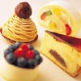

わざわざ出かけなくても、おうちで簡単にCafe気分が味わえます。
ベランダやお部屋の日向でゆっくりとオープンカフェを気取ったり、ちょっと素材やカップにこだわって、自分だけのCafeTimeを楽しんでみませんか？
コーヒー豆の主な産地とホットメニューの紹介
紅茶葉の主な産地とホットメニューを紹介
日本茶の主な産地とホットとメニューの紹介 さらに、今注目さている“お茶の効能”について も紹介
 飲み物にこだわったらお菓子も手作り。簡単にできるSweetsを紹介
感想や、ご質問をお待ちしております。